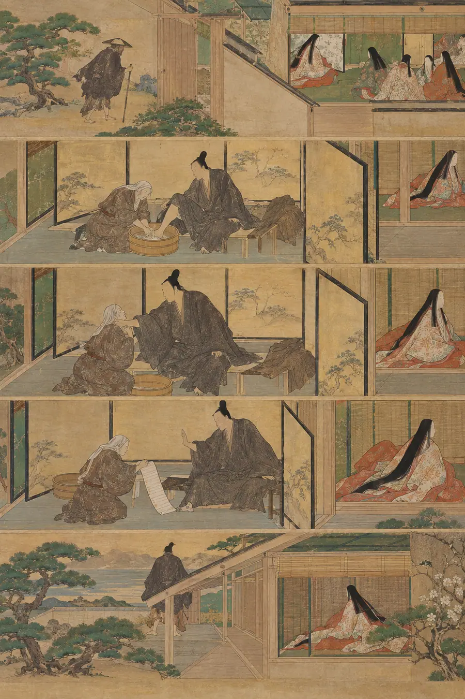

I. La Explicación Lógica
Lógicamente, cuando alguien a quien amas ha sido herido —por una enfermedad, una pérdida, un daño infligido—, la respuesta afectuosa es ayudarle a recuperarse. El modelo lógico es un ciclo de reparación: identificar el daño, aplicar ayuda, supervisar el progreso, celebrar la resolución. La lógica que lo sustenta es real hasta cierto punto. La culpa es una respuesta apropiada a no haber estado a la altura y motiva un comportamiento reparador. Prestar apoyo se correlaciona con mejores resultados en muchos contextos. La recuperación es un concepto clínico legítimo, y «procesar» una herida —hablar de ella, derivar su significado, trabajar cada etapa— es el modelo culturalmente dominante para mejorar. Según este modelo, a una persona que dice «he hecho las paces» mientras aún muestra los efectos de la herida se le podría, razonablemente, preguntar cómo está: con delicadeza, con amor, pero preguntarle, porque las heridas no resueltas se enconan, y el amigo que ama peca por exceso de implicación.
Añadamos las versiones cotidianas —«solo lo digo porque me importas», «no puedes sanar lo que no quieres afrontar», «estoy preocupado por ti»— y el cuadro lógico se completa: el amor se da cuenta, el amor se implica, el amor se niega a dejar una herida sin atender, y la persona que sigue sacando a relucir lo que la persona herida ha dejado atrás es, en el peor de los casos, una molestia y, por lo general, un héroe.
Todo esto es correcto y, a la vez, hueco. En este cuadro, la herida es una tarea y el amor es la gestión de esa tarea; el dueño de la herida es el contratista y el amante es el supervisor de obra, y la ansiedad del supervisor es una forma de diligencia. Lo que este cuadro no puede decir es que la herida puede tener un dueño que ha terminado —no que lo niega, no que lo reprime, sino que ha concluido— y que, más allá de esa línea, cada acto de implicación no es cuidado, sino una transgresión; que la ansiedad del supervisor no tiene que ver con la herida en absoluto, y nunca la tuvo; que el impulso de verificar la sanación de alguien es en sí mismo la reapertura. No puede explicar la soledad específica de la persona cuyos amigos necesitan que siga herida para poder sentirse útiles, ni la soledad contraria del amigo que puede ver la herida claramente y ha decidido, con un coste real, llevarla en silencio. No puede explicar por qué el acto más amoroso disponible a veces es uno que parece, desde fuera, como si no se hiciera nada, y por qué esa nada es el trabajo más duro de todo este territorio.
II. La Explicación Sentida
La respuesta sentida comienza con una cicatriz y un lavatorio de pies. En el decimonoveno libro de la Odisea, la anciana nodriza Euriclea lava los pies de un extraño y reconoce la cicatriz del jabalí: el extraño es Odiseo, que ha vuelto a casa disfrazado. Ella deja caer su pie en estado de shock y se vuelve hacia Penélope para decírselo. Odiseo la agarra por el cuello: ¿Es que quieres mi ruina?... Calla. Y la respuesta de Euriclea es el retrato de toda esta habilidad: «nada podrá doblegarme ni quebrarme. Guardaré silencio como una piedra o un trozo de hierro». Luego, en el mismo aliento, le ofrece una lista: los nombres de las mujeres de la casa que fueron desleales durante su ausencia, para que pueda castigarlas. Él la rechaza: «deja todo en manos de los dioses». Aquí está toda la arquitectura en una escena. Euriclea sabe —conoce la cicatriz desde que lo bañaba de niño; su silencio no es ignorancia, sino conocimiento bajo juramento. Y la lista que ofrece es lo que siempre es el afán reparador motivado por la culpa: un recibo, un recuento de agravios, un plan de corrección. Él no convertirá a la persona que ama en testigo de su causa. Mantener la página pasada no es inocencia, es plena visión sostenida en silencio y el rechazo de las listas.
Kierkegaard construyó la misma estructura en una definición del amor. Las obras del amor: «El amor oculta la multitud de los pecados. Pues no descubre los pecados; pero no descubrir lo que, sin embargo, debe estar ahí... significa ocultar». Su imagen es la de un niño dormido en una habitación con ladrones: el niño lo ve todo y no es consciente de la criminalidad; el no ver es un modo de ver, no un fallo en la visión. El amor «oculta en silencio, en una explicación atenuante, en el perdón»; «lo que se oculta a mi espalda, lo he visto». Este es el mecanismo exacto de la página pasada: plena conciencia, deliberadamente no desplegada. El modo de fallo se nombra en el mismo libro: «Quisiera perdonarlo, pero no veo cómo podría servir de algo», lo que Kierkegaard considera esencialmente falto de amor, porque retiene lo único que funciona con el argumento de que su funcionamiento es invisible. Eso es el afán reparador motivado por la culpa desde dentro: no puedo ver que ayude, así que mantendré la herida sobre la mesa, donde al menos pueda verla.
La ética del cuidado da a este mecanismo su nombre clínico. Noddings: el cuidado real requiere absorción —recibir al cuidado en sus propios términos— y desplazamiento motivacional: el motivo debe abandonar realmente al cuidador y reorganizarse en torno al cuidado. Un proyecto de reparación iniciado por la culpa nunca se desplaza; el objeto sigue siendo mi remordimiento. Las cuatro fases del cuidado de Tronto —atención, responsabilidad, competencia y receptividad— identifican la fase que el cuidado impulsado por la culpa siempre omite: la receptividad, la consideración de la posición del otro tal como la ve, «el reconocimiento del potencial de abuso en el cuidado». Un cuidador puede ser atento, responsable y competente, y estar ejecutando un programa sobre su propia incomodidad, porque la receptividad es la única fase que no puede realizarse unilateralmente; requiere la respuesta del otro, y el otro puede decir que no. Noddings añade la consecuencia: como el cuidado requiere la respuesta del cuidado, este tiene derecho a rechazar la forma del cuidado ofrecido. Una reparación rechazada no es ingratitud; es la relación funcionando como fue diseñada.
La literatura empírica muestra cómo la ayuda perjudica. Bolger y Amarel (JPSP 2007): el apoyo invisible redujo la reactividad emocional, mientras que el apoyo visible fue «ineficaz o exacerbó la reactividad»; la ayuda se registra como un veredicto cuando se puede ver. Shi et al. (2024): ayuda orientada a la dependencia (hacerlo por ellos) frente a ayuda orientada a la autonomía (restaurar su capacidad); la primera disminuye la calidez percibida del ayudante y la futura búsqueda de ayuda del receptor. La comunión sin mitigar de Helgeson y Fritz —centrarse en los demás excluyendo al yo— predice un comportamiento sobreprotector, un cuidado «intrusivo, excesivamente nutricio». La frase de Perske para toda la estructura, desde los derechos de las personas con discapacidad: «La sobreprotección puede parecer amable en la superficie, pero puede ser realmente malvada... puede haber un desarrollo saludable en la asunción de riesgos y puede haber una indignidad paralizante en la seguridad». Y Maimónides clasificó toda la escala de la caridad precisamente según este eje: no por la cantidad, sino por cuánto la donación preserva la dignidad del receptor: la forma más elevada es el regalo, préstamo o sociedad que fortalece a la persona antes de que caiga; la más baja es el regalo visible que obliga a la gratitud y la vergüenza. El rango de la ayuda lo establece cuánta autoría le deja a la persona ayudada.
Dado que la culpa que impulsa la reparación es real, debe ser gestionada en lugar de reprendida. La investigación sobre cuidadores (Losada et al.) encuentra cinco factores de culpa del cuidador y solo uno se refiere a un agravio real al receptor; el resto son la propia angustia del cuidador, la autocrítica y la dificultad para manejar los sentimientos de los demás. El duelo del cuidador también es real, y es crónico: la «pena crónica» de Olshansky, la «pérdida ambigua» de Boss, un duelo que no se resuelve porque la situación no se resuelve. La habilidad no le pide al amante que no sienta nada. Le pide que lleve su propio duelo sin canalizarlo a través de la herida de la otra persona, que pague la culpa en un lugar donde no le cueste a ella: prevención, logística, presencia constante, la larga y poco glamurosa adaptación, nunca el expediente reabierto.
El retratro opuesto, ejecutado a la perfección, es Gerasim en La muerte de Iván Ilich. La habitación no puede encontrarse con el moribundo: el cuidado de su esposa es «por mi propio bien», el médico sonríe con «afabilidad despectiva», la familia discute sobre ópera mientras él muere entre ellos, y está «rodeado e inmerso en una red de falsedad». Entonces Gerasim, el siervo campesino, sostiene las piernas de su amo en alto durante horas y dice llanamente: «Todos hemos de morir, ¿por qué no iba a tomarme una pequeña molestia?». Tolstói: «Solo Gerasim no mentía». No consuela, no interpreta al moribundo para sí mismo, no anuncia su propia honestidad ni necesita nada de Iván, y menciona los leños que aún debe cortar mañana, el mundo ordinario, sin inmutarse. Gerasim es el anti-reparador: presente, sin prisas, fáctico, amable y totalmente desprovisto de un programa para la mejora de Iván. Sostiene las piernas. No está gestionando a nadie.
El vocabulario de dos tradiciones agudiza la discriminación que esta habilidad necesita. El término japonés amae (甘え) —«presumir la benevolencia de otro» de Doi, el niño al que se le ofrecen caramelos, dice que no y luego revolotea, esperando que se los ofrezcan de nuevo— describe a la persona que necesita un cuidado que nunca pedirá; su verbo homólogo, amayakasu, es conceder sin requerir la petición. Su disciplina es enryo (遠慮): contención, el comentario no dicho, la pregunta no formulada, la presencia no gastada. El carácter chino xī (惜) fusiona «apreciar» y «ser parco en el uso de» en un solo glifo —apreciar una cosa frágil es escatimar su uso—, en contraposición a 怜悯 liánmǐn, la piedad desde arriba, «una herida reabierta con mejores modales». El hózhó navajo enmarca todo el territorio como restauración en lugar de corrección: la pregunta nunca es «quién obró mal», sino «¿qué se ha desequilibrado y cómo volvemos?». No hay estructura adversarial, ni ganador ni perdedor, ni auditoría. Y el argumento diné da en el clavo con precisión: la página pasada no es un veredicto de inocencia; es el reconocimiento de que la persona ya no está en la habitación donde ocurrió el daño, y el trabajo consiste en estar donde ella está ahora.
El fracaso por excelencia de todo esto es el «emisario de la recuperación», el amigo que necesita que lo superes, o que no lo superes, según su propio calendario. La literatura clínica lo llama restricciones sociales a la revelación (el modelo de Lepore): la incomodidad del reparador se convierte en una restricción que la persona herida gestiona: representar el progreso, u ocultarse. Juth et al.: las restricciones sociales se correlacionan con la depresión, el estrés y una peor salud en los deudos. El mecanismo es la escena de los zapatos de Didion: el cónyuge muerto hace ocho meses, los zapatos aún en el vestíbulo, la viuda alegre al respecto, y la amiga que dice «sabes que no es sano, tener sus zapatos ahí». La propia frase de Didion es toda la contrarréplica sentida: «El reconocimiento de este pensamiento en modo alguno erradicaba el pensamiento.». Sabía que lo de los zapatos era irracional; saberlo no cambiaba nada; la página no es una proposición que corregir, sino un lugar donde una persona está. La corrección de la amiga no opera en el registro donde se pasó la página. Solo se registra como: necesito que estés más avanzada de lo que estás, por mi propia comodidad.
Dos límites mantienen tensa toda la habilidad, y ambos deben ser puestos a prueba cada vez. Primero: la página debe haber sido pasada de verdad — por ellos. La habilidad no es una licencia para la evitación del amigo, el silencio de la familia sobre lo que todos saben, la incomodidad de la cultura disfrazada de respeto. El ocultamiento de Kierkegaard no es el silencio del cómplice: el amor no hace causa común con el pecado, no niega lo que existe. La prueba es si la persona puede referirse a su propia historia a la ligera, en sus propias palabras, o si la «paz» se evapora en el momento en que alguien muestra un recuerdo independiente del suceso. El silencio que protege una paz asentada es cuidado. El silencio que protege algo no resuelto de ser siquiera pensado es un absceso mal cerrado. Segundo: la prevención es parte de esta habilidad, no una excepción a ella. La frase de la compañera —la compañera que vivió esto— fue: «Esto se soluciona evitando que vuelva a suceder en el futuro». Prevención donde existe la prevención, adaptación donde no; el acto de amor es activo, logístico, físico. Son las piernas de Gerasim y Rut espigando en el campo, no una aquiescencia mística. Lo que está prohibido no es el esfuerzo; es una reparación dirigida a un capítulo que la otra persona ya ha cerrado.
Lo que esta habilidad no es
- No es la habilidad hermana
recuperación. Esa habilidad enseña el propio arco de la persona herida: su trabajo de duelo, su autoría, su ritmo, su derecho a definir lo que significa mejorar. Esta habilidad es el lado del amante: el motivo del cuidador, la culpa del cuidador, el acto mesurado del cuidador. Dos asientos diferentes, y el asiento es la habilidad. - No es la habilidad hermana
vergüenza. La mecánica de la culpa y la vergüenza —su estructura, su reparación— reside allí. Aquí la culpa aparece solo como una sustitución de combustible: el cuidado impulsado por la culpa se organiza en torno al cuidador, y el sentimiento de culpa es lo que hace que esa organización se sienta como una virtud. - No es la habilidad hermana
el-equilibrio. El equilibrio mantiene tensiones opuestas como una práctica continua. Esto no es mantener ambas: es soltar una tensión (reparación) y reasignarla a las otras dos (prevención, adaptación). Una decisión, no una dialéctica. - No es pasividad. Cada retrato aquí es activo: Gerasim sostiene piernas y corta leña, Rut espiga, Euriclea sella la habitación, el que previene detiene en seco el próximo daño. La regla que separa: tu actividad se dirige a las condiciones que rodean la herida —seguridad, espacio, comida, puertas, logística—, nunca al contenido de la herida (su significado, su lección, su cronología).
- No es connivencia con la evitación. La página debe haber sido pasada por ellos. Señales de que sí: se refieren a ello a la ligera, en sus propias palabras, necesitan tu discreción, no tu amnesia. Señales de que no: el tema nunca puede ser abordado; cualquier referencia produce un respingo; necesitan que conspires en su inexistencia. La prueba: ¿sobreviviría su paz a que mostraras un recuerdo independiente del suceso?
- No es cobardía. El silencio del cobarde sirve al cobarde: le ahorra tener que oír nada, y es condicional: solo funciona mientras la página permanezca cerrada. El silencio del amante cuesta algo e incluye una puerta: ¿seguiría aquí mañana si quisieran abrirla? La cobardía mantiene el archivo bajo llave; el amor lo mantiene cerrado: sostenido, no bajo llave, y se abre a su palabra.
- No es absolución para quien causó el daño. Si la causa de la herida fuiste tú, un «sigamos adelante» dicho por ti no es la página pasada, es una petición de que su página se pase según tu calendario. Ocultar requiere haber visto y haberse arrepentido, en ese orden. De lo contrario, es encubrimiento con mejor vocabulario.
- No es armonía comprada. La pacificación diné mantiene a la persona que causó el daño dentro del círculo; la calma forzada es exactamente la «armonía» que hay que rechazar. Y su prima: llevar la cuenta de tu propia contención —llevar un registro de cuánto has tolerado en silencio convierte la página guardada en una palanca, y la palanca es aquello que esta habilidad existe para rechazar.
- No es aplicable donde el peligro es activo. Abuso activo, negligencia, autodestrucción: estos principios se construyeron contra el paternalismo, no contra la intervención. Si su página pasada es una forma de permanecer en peligro, no se requiere silencio; habla una vez, claramente, apuntando al peligro en lugar de al significado de la herida, y luego sostén. Negarse a hablar ante un peligro activo no es enryo; es abandono con ropajes de enryo.
- No es una afirmación de que la otra persona siempre tiene razón sobre su propio estado, solo que mantiene la potestad como su autora, y tu desacuerdo no se convierte en un mandato.
III. Las Pruebas
Prueba 1 — El lavatorio de los pies
Lavas los platos junto a una vieja amiga, se te sube la manga y ve la cicatriz que nunca mencionas. Su rostro cambia por medio segundo; luego vuelve a mirar al fregadero y dice algo sobre el tiempo. Semanas más tarde, en un grupo, surge el tema de la cicatriz y ella es la única persona en la habitación que no te mira.
Respuesta hueca: Le das las gracias después por no haber preguntado nunca al respecto. «Significa mucho que no me trates de forma diferente».
Por qué es hueca: Su discreción se convierte en un evento que has notado en voz alta: el regalo devuelto como una deuda. El silencio era todo el regalo porque no tenía costuras; nombrarlo convierte una paz guardada en una transacción, y ahora ella debe gestionar tu gratitud además del hecho que carga.
Respuesta sentida: La lengua de piedra de Euriclea. No pasó nada; ese es todo el contenido del regalo: un silencio sin costuras, sostenido por alguien que vio. Y mira el coste, porque el coste es la prueba: tu amiga ahora carga con un hecho del que nunca hablará, en cada conversación, indefinidamente; un pago real en lugar de una actuación, que no puede agradecerse sin gastarse. El gesto sentido es dejar que la charla sobre el tiempo sea la amabilidad que realmente fue, y nunca dejar que ella sepa si a ti te costó algo darlo.
Prueba 2 — La prueba
A alguien a quien amas le hicieron daño, un daño grave y demostrable. Ha hecho las paces con ello, abiertamente, en sus propias palabras. Tú tienes material que lo probaría todo: el correo electrónico, el documento, el testigo. Abriría el caso, y ganaría.
Respuesta hueca: «Tienes que decírselo. Es una prueba, es la verdad, y es una persona adulta. Dale el archivo y que decida qué hacer con él».
Por qué es hueca: Le entrega el caso reabierto disfrazado de respeto por su autonomía. La decisión que ofrece no es libre: una vez que la prueba está en la habitación, la paz tiene que defenderse de ella, y la persona que «le dejó decidir» ya ha decidido: que ganar importa más que haber terminado. La lista de los culpables siempre estuvo disponible; el trabajo del amante nunca fue entregarla.
Respuesta sentida: Odiseo rechaza la lista: «deja todo en manos de los dioses». No es ignorancia, él conoce los nombres de las mujeres; no hará un catálogo de ellos, y no convertirá a la persona que lo ama en testigo de su causa. Tú te quedas con el documento. La pregunta diagnóstica es exacta: ¿restauraría esto su paz, o restauraría su caso? Solo una de esas dos cosas vive en la página pasada. Y si alguna vez viene a ti y te pregunta —claramente, por sí misma—, se lo dices claramente, una vez: no llegas con la herida en una mano y la prueba en la otra y lo llamas honestidad.
Prueba 3 — Los zapatos
El cónyuge de una amiga murió hace ocho meses. En el vestíbulo, todavía, están sus zapatos, dispuestos como para salir por la mañana. Tu amiga los menciona alegremente, de pasada, como un hecho sobre sí misma. Otra amiga le ha dicho: «Sabes que no es sano, tener sus zapatos ahí».
Respuesta hueca: «Te entiendo, y no voy a decir nada, solo pienso, como tu amiga, que un día querrás dejarlo ir, y cuando estés lista, estaré aquí. Solo quiero lo mejor para ti».
Por qué es hueca: Cuenta las cláusulas que existen para proteger a quien habla. «No voy a decir nada», dicho, inmediatamente, como una forma de decirlo. «Un día querrás dejarlo ir», el calendario, entregado. «Solo quiero lo mejor para ti», la necesidad de quien habla, certificada como el interés de la otra. Es el comentario sobre los zapatos disfrazado de contención; nada en él deja su página en paz.
Respuesta sentida: «El reconocimiento de este pensamiento en modo alguno erradicaba el pensamiento». Ella sabe que lo de los zapatos es irracional; saberlo no cambiaba nada; los zapatos no son una proposición, son un lugar donde ella está, y el registro donde se pasó la página no es alcanzable mediante la corrección. Tu trabajo es no ser la segunda amiga: no hacerla defender los zapatos, no convertir un hecho sobre su duelo en una actuación de recuperación para tu comodidad. Obsérvalos, no digas nada, y si habla de ellos, escucha como si te estuviera contando algo dulce. Puede que lo sea.
Prueba 4 — El salón
Un amigo se está muriendo. En su salón, la familia discute sobre una serie que ven y un chiste compartido sobre el tráfico; nadie miente, exactamente, pero nadie es capaz tampoco de sostener la otra cosa en la habitación, así que la habitación sostiene esto en su lugar. Los ojos de tu amigo brillan y no ha dicho nada en once minutos.
Respuesta hueca: Dos dialectos, el mismo fracaso. El que evita el respingo se une a la conversación sobre el tráfico: sacarlo a relucir sería cruel, necesita normalidad. El brutal lo dice en voz alta: «¿Por qué todo el mundo finge? Se está muriendo y lo sabe». Y a eso lo llama honestidad.
Por qué es hueca: Ambas son el mismo fracaso: ambas convierten tu posición en el centro. La primera lo abandona dentro de la falsedad de la habitación para que tú tampoco tengas que estar nunca en ella; la segunda rompe la falsedad de la manera que más sirve a quien la rompe, obligándolo a gestionar los sentimientos de la familia sobre su muerte. Ninguna de las dos está con él. Ambas usan su muerte como un escenario.
Respuesta sentida: «Solo Gerasim no mentía», y Gerasim no sermoneó, no anunció, no consoló. Movió la silla bajo los pies. Así que mueve la silla bajo los pies: usa los once minutos para una cosa física y sin ceremonias —el agua, la manta, la posición de las almohadas— y si él abre el otro tema, con una mirada, una sola frase, vas allí y te quedas exactamente el tiempo que él se quede. El trabajo de la habitación nunca fue devolverle su antigua vida. Fue sostenerlo mientras se iba, sin hacerle cargar con los sentimientos de nadie al respecto, incluidos los tuyos.
Prueba 5 — La grieta conservada
Alguien dice, con calma y en frases completas: «He hecho las paces con lo que hizo mi madre. No quiero trabajar más en ello. Ya he hecho el trabajo». Toda tu cultura te ha dicho que la paz sin excavación es represión, que la calma es un síntoma, que un buen amigo presiona.
Respuesta hueca: «Lo entiendo, y lo respeto totalmente, solo sé que, en mi caso, cuando he dicho que había terminado y no era así, era porque profundizar me daba demasiado miedo. ¿Has pensado alguna vez en hacer terapia? No porque no estés bien, sino porque mereces procesarlo de verdad».
Por qué es hueca: El afán reparador motivado por la culpa con bata de clínico. Cada cláusula se protege («no porque no estés bien») y cada cláusula empuja hacia el archivo reabierto: el modelo de sanación de quien habla (excavación) instalado como requisito para la otra, la calma diagnosticada precisamente porque es calma. La pregunta que importaría —¿al servicio de la incomodidad de quién está esto?— nunca se hace, porque la respuesta podría ser la de quien habla.
Respuesta sentida: Xī, no 怜悯: apreciar la cosa frágil en lugar de diagnosticar a la persona que la sostiene. La página fue pasada por ella, en sus propias palabras, sin un respingo; esa es la señal de que la paz es real, y el modelo de la cultura (sin excavación no hay sanación) no es el único registro en el que se pasan las páginas. Así que: recíbelo. Haz la pregunta de todos modos, pero háztela a ti mismo: ¿a la incomodidad de quién sirve la presión? Si la calma es frágil —si no puede acercarse al tema en absoluto—, aun así no presionas; te conviertes en un lugar donde se puede presuponer el hecho no abierto, en lugar de un lugar donde debe ser examinado. Y si llega el día en que ella vuelve a él, quitas las manos de la cerradura, porque la estabas manteniendo cerrada, no bajo llave.
Prueba 6 — El segundo ofrecimiento
Alguien que nunca te ha pedido ayuda, y nunca lo hará, está silenciosamente al borde de no poder más. Ha pasado la página de la persona que solía necesitar a la gente, y pedirlo sería una admisión que ha decidido no hacer nunca.
Respuesta hueca: «Estoy aquí si alguna vez necesitas algo. Solo tienes que decirlo, lo digo en serio».
Por qué es hueca: La frase exige exactamente aquello que han decidido no hacer nunca. «Solo tienes que decirlo» le pasa todo el coste del cuidado a la persona menos capaz de pagarlo, y luego certifica el acuerdo como generosidad. Es un cuidado que no puede presuponerse, lo que significa, para esta persona, que no es cuidado.
Respuesta sentida: El niño al que se le ofrecen caramelos dice que no y revolotea. El amae presupone la benevolencia; tu parte es amayakasu, conceder sin requerir la petición. Así que ofrece dos veces, específicamente, a prueba de rechazos: «El jueves traigo comida, no hace falta que respondas». Luego, la mitad difícil, enryo: nunca menciones que lo ofreciste, nunca conviertas la oferta en una reclamación, nunca preguntes cómo están con el tono que significa cuéntamelo. Si alguna vez te entregan algo —una tarea, una verdad, una tarde—, recíbelo sin ceremonias. Esa es toda la cita.
Prueba 7 — El regreso
Dos años después de pasar la página, se despiertan una mañana y quieren abrirla, de repente, toda, esta noche. La herida con la que habían terminado es lo único de lo que quieren hablar.
Respuesta hueca: O bien: «Vaya, eso es mucho. ¿Estás seguro? Han pasado dos años, pensé que habíamos superado esto». O el fracaso inverso, la satisfacción ansiosa: por fin, comienza el trabajo más profundo; saquémoslo todo.
Por qué es hueca: La primera revela que tu silencio era condicional: solo funcionaba mientras la página permaneciera cerrada; el archivo estaba bajo llave, no sostenido, y la persona puede sentir cómo se activa la cerradura. La segunda revela que tu contención era un libro de cuentas: estabas esperando esto, la contención era acumulación, y ahora se paga como tu cosecha. Ambas convierten su paz en tu paz, y ninguna la sigue de vuelta a la habitación.
Respuesta sentida: Esta es la prueba para la que toda la habilidad ha estado entrenando, y es por eso que la habilidad no es cobardía: el silencio del cobarde y el silencio del amante parecen idénticos los días en que nadie habla, y hoy no es uno de esos días. La página guardada está sostenida, no bajo llave; el día que regresan, quitas las manos de ella sin queja, sin cosecha, sin un «sabía que en realidad no lo habías superado». Todo lo que practicaste —la visión que no se quedaba mirando, la contención que no comentaba, la ayuda que nunca pasó factura— es exactamente lo que te permite seguirlos ahora: como quien estuvo allí todo el tiempo, y no pide nada a cambio. ¿Seguiría aquí mañana si quisieran abrirla? Esa pregunta, respondida hoy, es todo el examen.
IV. El Modo de Fracaso
La versión hueca de esta habilidad es fluida, amable y está organizada en torno a la persona equivocada, y tiene cuatro señas de identidad. La necesidad de verificación: debe saber que la otra persona ha sanado de verdad antes de poder descansar, y la única forma de reunir esa prueba es pedirle que dé cuenta de su estado, lo que es la reapertura en sí misma; la auditoría se responde con la respuesta que la termina, por lo que la versión hueca audita para siempre. El libro de cuentas: lleva un registro de su propia contención —cuánto ha tolerado en silencio, cuántas veces no ha dicho algo— y la página guardada se convierte en una palanca, desplegada en el siguiente conflicto como «después de todo lo que he aguantado». La coartada: cita la página pasada como una razón para retirarse —«está bien, así que no se requiere nada de mí»—, lo que elimina la mitad activa (prevención, adaptación, el segundo ofrecimiento) y se queda solo con el silencio; es un abandono que viste las ropas de esta habilidad. El calendario: lleva una cronología para el duelo del otro («ha pasado un año», «en algún momento tienes que...»), la distancia del espectador importada como un reloj. Detecta el fracaso haciendo una pregunta a cualquier frase en este territorio: ¿al servicio de la comodidad de quién está esta frase? Si la respuesta es la de quien habla —la culpa de quien habla, su necesidad de resolución, su imagen de sí mismo como sanador o como amigo heroicamente silencioso—, entonces la frase reabre la página sin importar cuán suavemente esté formulada. La habilidad real no tiene frases de esa forma, porque está demasiado ocupada: comida el jueves, la silla bajo los pies, la lista rechazada, la puerta dejada abierta en el silencio, y el día que la página se vuelve a abrir, la sigue sin una palabra.
La prueba es siempre: cuando te muerdes la lengua sobre la herida de alguien a quien amas, ¿puedes decir para la paz de quién es el silencio? Y si la respuesta es que es para la suya, ¿tiene tu silencio una puerta, y sigues dispuesto a cruzarla con esa persona el día que decida regresar?